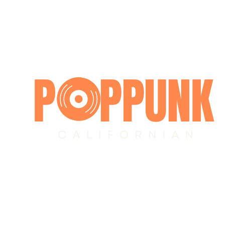

Home
Albuns
Cadastre-se
Títulos em Destaque
Linkin Park - Minutes to midnight
Artista: Linkin Park
Lançamento: 14 de maio de 2007
Gravadora: Warner Bros. Records
Prêmios: Prêmio Echo de Melhor Grupo Internacional
Gêneros: Rock, Rock alternativo, Metal alternativo, Rapcore, Rock eletrônico
Ouça agora
Paramore - Riot!
Artista: Paramore
Lançamento: 12 de junho de 2007
Gravadora: Atlantic Records
Gêneros: Pop punk, Rock alternativo, Punk rock, Emo, Música pop, Pop rock, Power pop, Post-hardcore
ouça agora
Blink-182 - NINE
Artista: Blink-182
Lançamento: 20 de setembro de 2019
Gravadora: Columbia Records
Gêneros: Pop punk, Emo,Pop rock,Rock alternativo
ouça agora